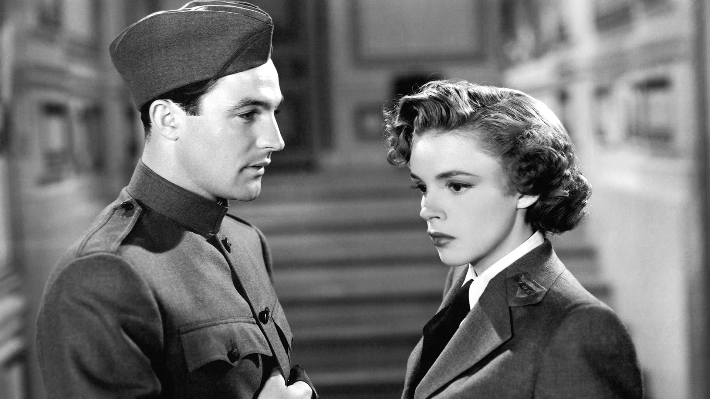
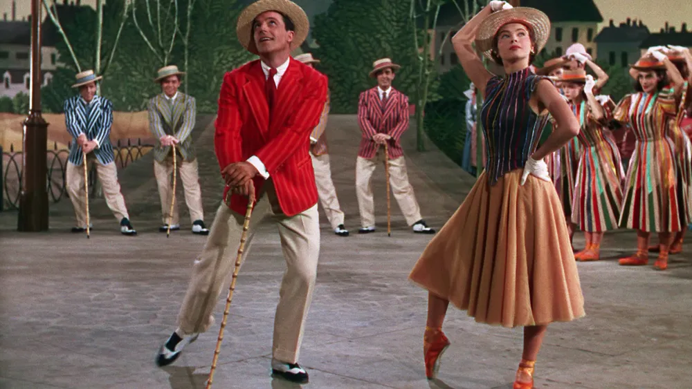
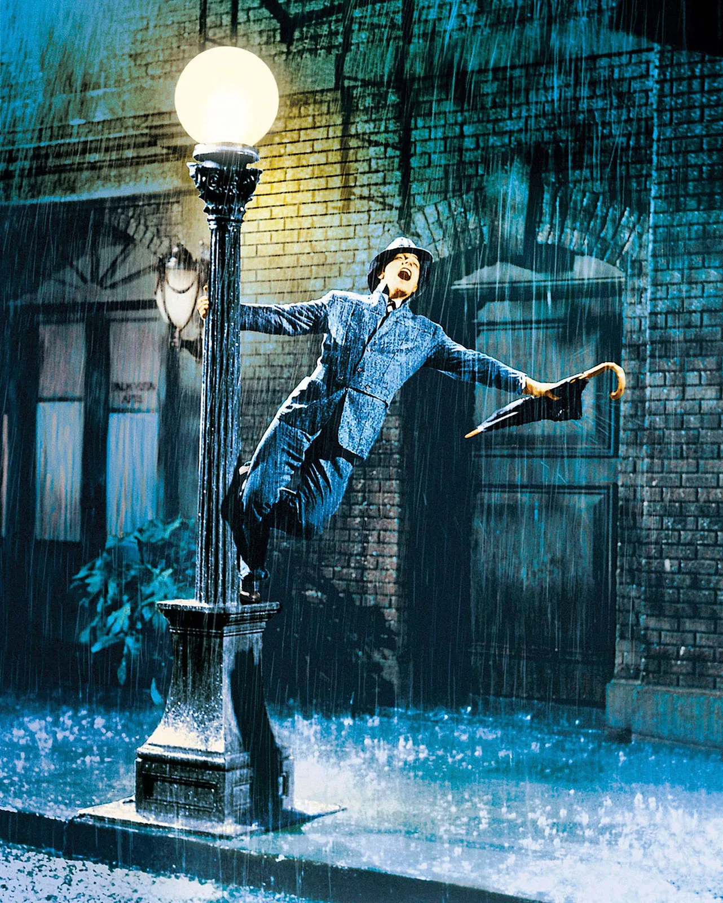
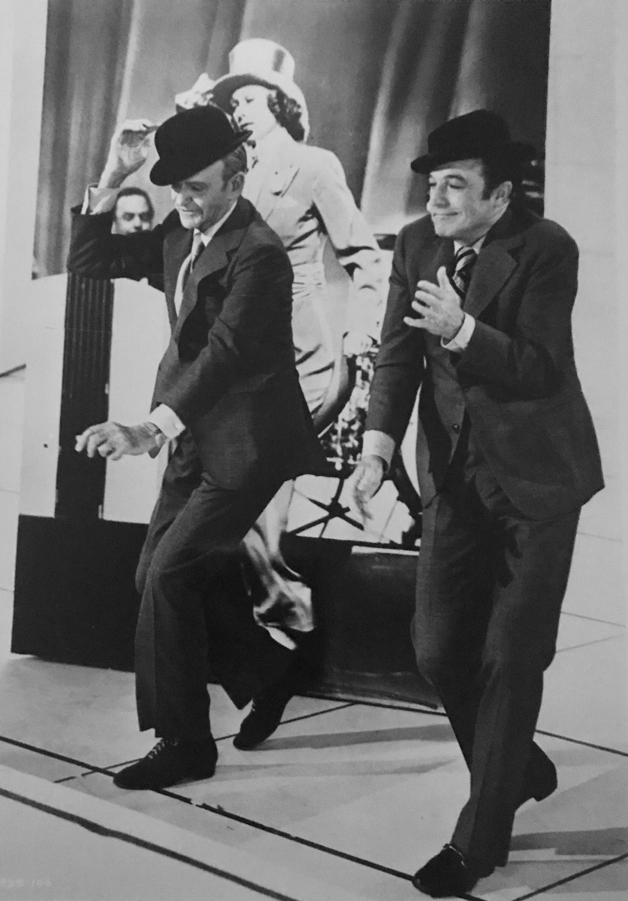

Gene Kelly
EXTRA!!!!!


Here is an image of Gene Kelly and Judy Garland in his film debut For Me and My Gal (1942)

Here is an image of Gene Kelly and Leslie Caron in the movie An American in Paris

Here is an image of Gene Kelly with the movie Singin' In the Rain

Here is an image of Gene Kelly and Fred Astaire for That’s Entertainment, Part 2 (1976)